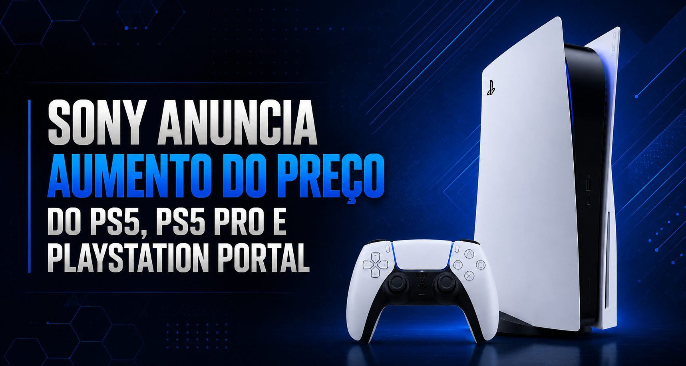
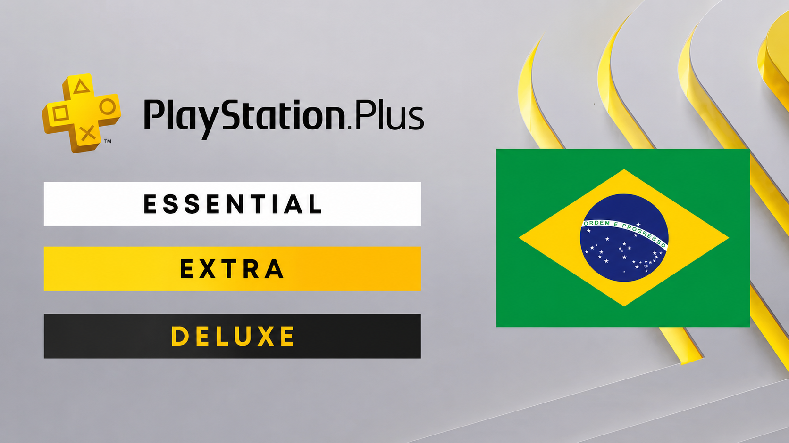
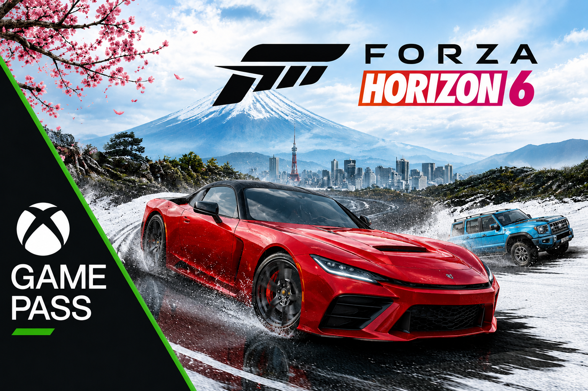

PlayStation fica mais caro e preocupa jogadores
O aumento no preço do PlayStation pegou jogadores de surpresa e
gerou forte repercussão nas redes sociais.
A Sony anunciou um aumento no preço do PlayStation em diversos
países, gerando preocupação entre os fãs. O reajuste foi justificado
por fatores econômicos e inflação global, mas muitos jogadores não
ficaram satisfeitos com a decisão.
Ler mais

Xbox lança nova atualização para consoles
A Microsoft liberou uma nova atualização para os consoles Xbox,
trazendo melhorias importantes de desempenho e estabilidade.
A Microsoft liberou uma nova atualização para os consoles Xbox,
trazendo melhorias de desempenho e correções importantes no
sistema. A atualização foi disponibilizada globalmente e já está
sendo instalada automaticamente para muitos usuários...
Ler mais
GTA 6 tem novas informações vazadas e anima fãs
Novos vazamentos sobre GTA 6 surgiram na internet e aumentaram
ainda mais a expectativa dos fãs.
Novos vazamentos sobre GTA 6 surgiram na internet e aumentaram
ainda mais a expectativa dos fãs. Informações indicam possíveis
detalhes sobre o mapa, personagens e até uma previsão de
lançamento...
Ler mais

PlayStation Plus sofre reajuste e gera críticas
O aumento nos preços da PlayStation Plus surpreendeu os jogadores
e gerou grande repercussão nas redes sociais.
A Sony anunciou um reajuste nos valores da PlayStation Plus em
diversos países, aumentando o custo das assinaturas e gerando
debates entre os jogadores sobre o custo-benefício do serviço...
Ler mais

Forza Horizon 6 chega ao Game Pass e anima jogadores
O novo Forza Horizon promete gráficos impressionantes, mapa
inspirado no Japão e lançamento direto no Game Pass.
A Microsoft confirmou a chegada de Forza Horizon 6 ao Xbox Game
Pass. O título traz novos carros, mundo aberto expansivo e
melhorias que empolgaram os fãs da franquia...
Ler mais